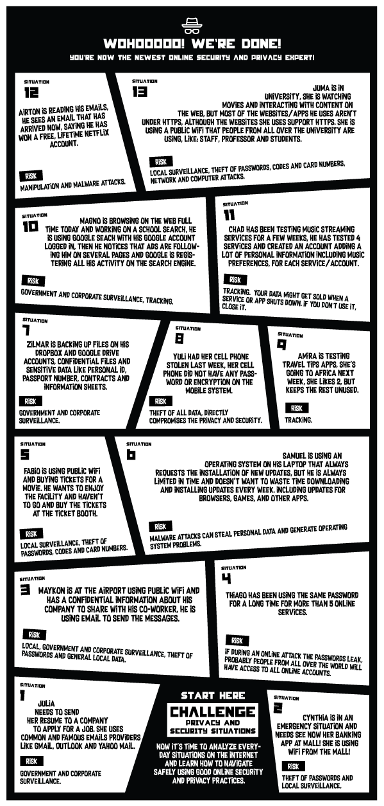
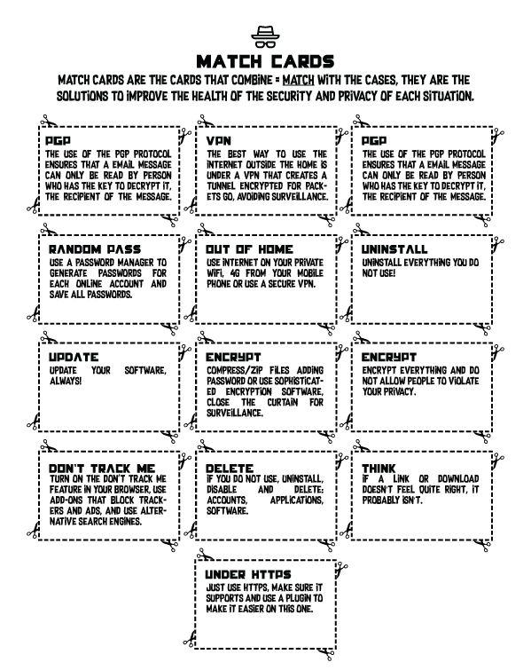
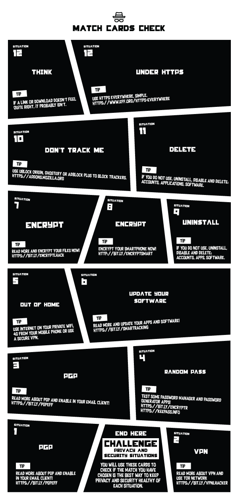

Privacy and Security Situations Challenge | Offline Game
CC-BY-SA by Geraldo Barros, Cynthia Pereira and Cyb3ll3 Oliveira.
60 minutes
Explore and analyze everyday situations on the Internet and learn how to navigate safely using good online security and privacy practices.
Web Literacy Skills
-
Read
Evaluate Synthesize -
Write
Design -
Participate
Protect
21st Century Skills
Learning Objectives
- Explore critical Internet privacy and security situations.
- Thinking, understand and discover appropriate solutions for the critical Internet privacy and security situations daily in our real life.
Audience
- 13+
- Beginner web users
Materials
- Board printed/hand-drawn
- Match cards printed/hand-drawn
- Match cards check printed/hand-drawn
- XP's Dashboard printed/hand-drawn
-
Why Privacy Matters
 Why does privacy matter? Often courts and commentators struggle to articulate why privacy is valuable. They see privacy violations as often slight annoyances. But privacy matters a lot more than that. Here are 10 reasons why privacy matters.
Why does privacy matter? Often courts and commentators struggle to articulate why privacy is valuable. They see privacy violations as often slight annoyances. But privacy matters a lot more than that. Here are 10 reasons why privacy matters.
1. Limit on Power
Privacy is a limit on government power, as well as the power of private sector companies. The more someone knows about us, the more power they can have over us. Personal data is used to make very important decisions in our lives. Personal data can be used to affect our reputations; and it can be used to influence our decisions and shape our behavior. It can be used as a tool to exercise control over us. And in the wrong hands, personal data can be used to cause us great harm.2. Respect for Individuals
Privacy is about respecting individuals. If a person has a reasonable desire to keep something private, it is disrespectful to ignore that person’s wishes without a compelling reason to do so. Of course, the desire for privacy can conflict with important values, so privacy may not always win out in the balance. Sometimes people’s desires for privacy are just brushed aside because of a view that the harm in doing so is trivial. Even if this doesn’t cause major injury, it demonstrates a lack of respect for that person. In a sense it is saying: “I care about my interests, but I don’t care about yours.”3. Reputation Management
Privacy enables people to manage their reputations. How we are judged by others affects our opportunities, friendships, and overall well-being. Although we can’t have complete control over our reputations, we must have some ability to protect our reputations from being unfairly harmed. Protecting reputation depends on protecting against not only falsehoods but also certain truths. Knowing private details about people’s lives doesn’t necessarily lead to more accurate judgment about people. People judge badly, they judge in haste, they judge out of context, they judge without hearing the whole story, and they judge with hypocrisy. Privacy helps people protect themselves from these troublesome judgments.4. Maintaining Appropriate Social Boundaries
People establish boundaries from others in society. These boundaries are both physical and informational. We need places of solitude to retreat to, places where we are free of the gaze of others in order to relax and feel at ease. We also establish informational boundaries, and we have an elaborate set of these boundaries for the many different relationships we have. Privacy helps people manage these boundaries. Breaches of these boundaries can create awkward social situations and damage our relationships. Privacy is also helpful to reduce the social friction we encounter in life. Most people don’t want everybody to know everything about them – hence the phrase “none of your business.” And sometimes we don’t want to know everything about other people — hence the phrase “too much information.”5. Trust
In relationships, whether personal, professional, governmental, or commercial, we depend upon trusting the other party. Breaches of confidentiality are breaches of that trust. In professional relationships such as our relationships with doctors and lawyers, this trust is key to maintaining candor in the relationship. Likewise, we trust other people we interact with as well as the companies we do business with. When trust is breached in one relationship, that could make us more reluctant to trust in other relationships.6. Control Over One’s Life
Personal data is essential to so many decisions made about us, from whether we get a loan, a license or a job to our personal and professional reputations. Personal data is used to determine whether we are investigated by the government, or searched at the airport, or denied the ability to fly. Indeed, personal data affects nearly everything, including what messages and content we see on the Internet. Without having knowledge of what data is being used, how it is being used, the ability to correct and amend it, we are virtually helpless in today’s world. Moreover, we are helpless without the ability to have a say in how our data is used or the ability to object and have legitimate grievances be heard when data uses can harm us. One of the hallmarks of freedom is having autonomy and control over our lives, and we can’t have that if so many important decisions about us are being made in secret without our awareness or participation.7. Freedom of Thought and Speech
Privacy is key to freedom of thought. A watchful eye over everything we read or watch can chill us from exploring ideas outside the mainstream. Privacy is also key to protecting speaking unpopular messages. And privacy doesn’t just protect fringe activities. We may want to criticize people we know to others yet not share that criticism with the world. A person might want to explore ideas that their family or friends or colleagues dislike.8. Freedom of Social and Political Activities
Privacy helps protect our ability to associate with other people and engage in political activity. A key component of freedom of political association is the ability to do so with privacy if one chooses. We protect privacy at the ballot because of the concern that failing to do so would chill people’s voting their true conscience. Privacy of the associations and activities that lead up to going to the voting booth matters as well, because this is how we form and discuss our political beliefs. The watchful eye can disrupt and unduly influence these activities.9. Ability to Change and Have Second Chances
Many people are not static; they change and grow throughout their lives. There is a great value in the ability to have a second chance, to be able to move beyond a mistake, to be able to reinvent oneself. Privacy nurtures this ability. It allows people to grow and mature without being shackled with all the foolish things they might have done in the past. Certainly, not all misdeeds should be shielded, but some should be, because we want to encourage and facilitate growth and improvement.10. Not Having to Explain or Justify Oneself
An important reason why privacy matters is not having to explain or justify oneself. We may do a lot of things which, if judged from afar by others lacking complete knowledge or understanding, may seem odd or embarrassing or worse. It can be a heavy burden if we constantly have to wonder how everything we do will be perceived by others and have to be at the ready to explain.
10 Reasons Why Privacy Matters by TeachPrivacy -
Start, tips and main board
Start
- Download and print or draw on a paper, ensuring that everyone can see all the content seamlessly.
- Cut the match cards on the indicated line.
- Cut out the check cards on the border.
- Do not keep check cards with the content visible, no one can see the content, just at the time of checking and just the right card.
Tips
- This is a game that can be played alone or in a group, it is more fun in a group, it can be from your club, school, work, etc.
- You can draw the board and cards by hand if you want or can print on a harder paper to improve durability.
- You can create your own board and cards remixing the situations.
- Add the names of the players on the dashboard.
- Define who will start first and the sequence if a group of 3 people or more.
Main board
This board is the main of this game, it have all situations to you'll work in a team.
 -
Rules
- The game starts in the first situation.
- The player starts in the first situation and must read the first situation and the risks described.
- Next will choose the best solution to improve the health of the privacy and security of the risk situation.
- When choosing the best match card for the situation, the player must add the card to the situation, just keep it on top of the situation on the board and read the solution for all.
- The player will use the check cards to check if it is really the best solution, it is the correct option. Match check cards reveal the perfect solution and tips with links to read after the game.
- If the player hits, he gains 10 XPs and must be added to the dashboard.
- It is the turn of the next player - he/she will go to the second situation and so on with the other players. Just follow through until the end of the game, the player with the highest score is the winner and the expert in privacy and security!
-
Cards
You'll use the match cards to combine the situations to solutions.
You'll use the match cards check to check if solution match with the situation.
